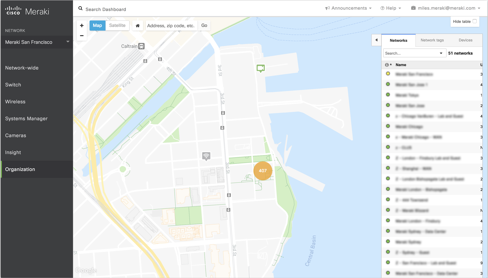
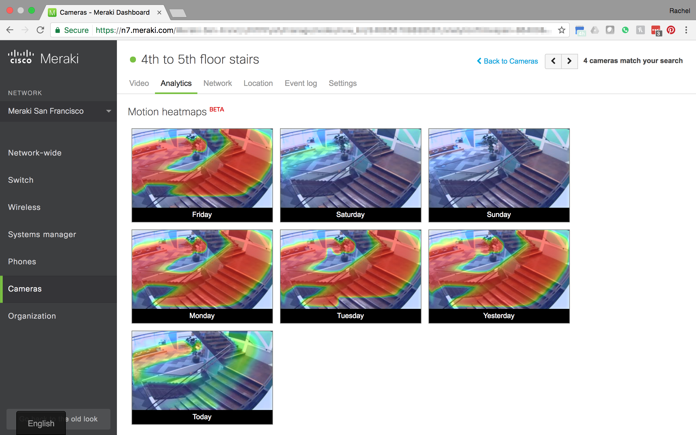

Skills
Ruby on Rails, React
Timeline
3 months
Overview
Over the summer, I had the privilege to intern at Cisco Meraki. During this time, I worked on improving Motion Alerts by:
- Adding a responsive graph to show the number of alerts users will get over the week based on their motion alert configuration
- Expanding the motion alert configuration scope by adding show people only events and motion sensitivity
- Implementing the selection of multiple areas of interest for motion alerts
- Providing more information to motion alerts emails by adding an action sequence image
Other than working on Motion Alerts 2.0, I had the opportunity to help streamline tasks performed by product managers by
- Implementing persistent tabs to help reduce the amount of time needed to setup camera in bulk
- Implementing the ability to export video clips after users peforms a Motion Search, to cut down the amount of time needed to gather data to be used for the person detection machine learning model

